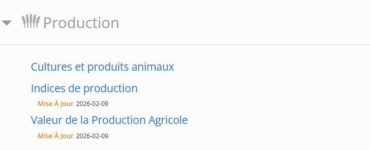
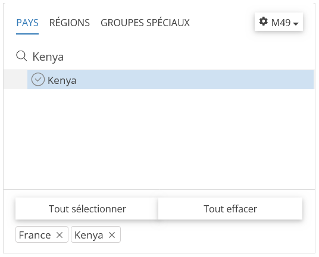
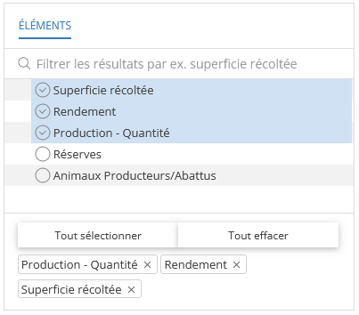
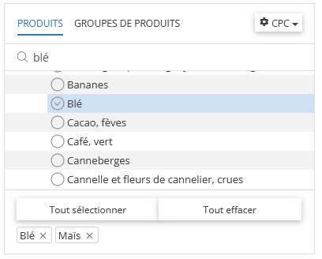
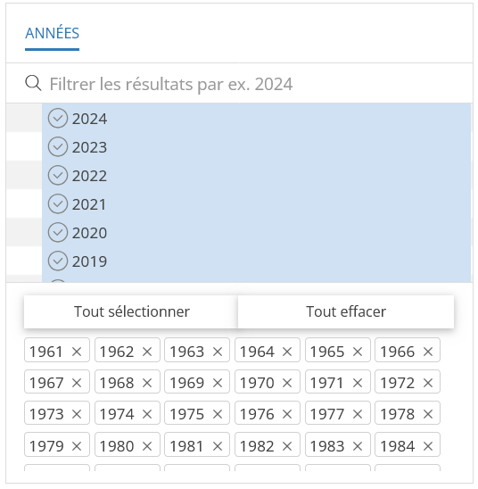
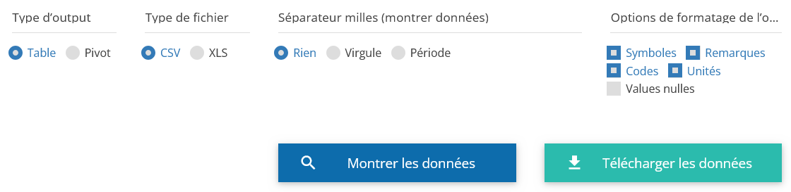
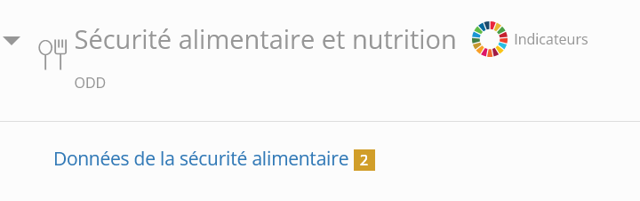
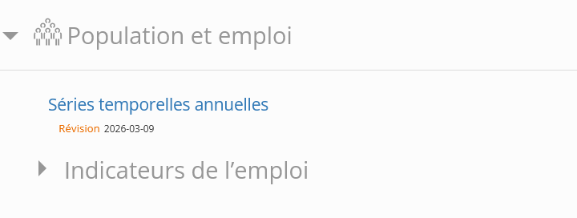

---
title: "Première Analyse en Statistique Descriptive"
format:
dashboard:
logo: img/Logo_simple_ISTOM_Couleurs_HD.png
theme: [sandstone, theme/custom.scss]
nav-buttons: [link-45deg]
github: https://github.com/votre-depot
fig-width: 10
fig-asp: 0.4
editor_options:
chunk_output_type: console
---Première Analyse en Statistique Descriptive
Introduction
Vous allez effectuer votre Première Analyse en Statistique Dscriptive (PASD) avec l’environnement de développement libre et gratuit, RStudio.
Ce travail s’effectuera en groupe de 4 ou 5 étudiants, pour un total de 10 groupes sur la promotion.
Ce projet consiste à réaliser une étude statistique comparative entre deux systèmes agro-alimentaires contrastés, l’europe occidental et l’hemisphère du sud (par exemple la France et le Kenya), en s’appuyant sur les données de la FAO.
À l’aide de RStudio et de l’interface Quarto, vous allez concevoir un tableau de bord interactif (Dashboard) qui synthétise les dynamiques de production végétale, l’efficacité des rendements et les enjeux de sécurité alimentaire sur les deux dernières décennies.
Ce travail vous place dans une posture d’ingénieur analyste : il ne s’agit plus seulement de calculer des chiffres, mais de faire parler les données pour mettre en lumière les forces et les vulnérabilités de modèles agricoles différents.


Objectifs
Les objectifs sont multiples :
Maîtrise de la “Data Ingénierie” : Apprendre à extraire, nettoyer et structurer des données brutes complexes (gestion des unités, traitement des valeurs manquantes).
Application des Statistiques Descriptives : Mobiliser les outils de base (moyennes, écart-types, coefficients de variation) pour quantifier la stabilité des récoltes et comparer les productivités nationales.
Analyse Agronomique Critique : Interpréter les résultats graphiques (courbes de rendement, surfaces cultivées) à la lumière des contextes pédoclimatiques et socio-économiques (climat tempéré vs tropical, agriculture intensive vs extensive).
Communication Scientifique : Synthétiser des informations multidimensionnelles dans un outil visuel professionnel et ergonomique, capable de transmettre un message clair à des décideurs.
Visualisation du rendu final
Pour mieux appréhender les attentes de ce projet, vous pouvez consulter cet exemple de dashboard interactif. Il illustre la manière dont les données brutes de la FAO sont transformées en indicateurs visuels et dynamiques pour l’aide à la décision.
Dossier de travail
Vous pouvez retrouver via ce lien la liste des groupes.
Travail à faire .
Il vous est demandé de synchroniser votre dossier de travail sur votre ordinateur personel, comme indiqué à ce lien.
Bases de données
Extraire les données de souveraineté alimentaire.
L’objectif est de récupérer quatre fichiers CSV distincts.
Afin d’accéder à la plateforme, allez sur le site FAOSTAT.
Dans la barre de menu supérieure, cliquez sur l’onglet Données.
L’objectif est de récupérer quatre fichiers CSV distincts pour chaque domaine listé ci-dessous.
Production

Sélectionnez Cultures et produits animaux.
Dans le quadran PAYS sélectionnez les deux pays de votre groupe, ici France et Kenya.

Dans le quadran Éléments sélectionnez Superficie récoltée, Rendement, Production - Quantité et Animaux Producteurs/Abattus.

Dans le quadran Produits sélectionnez Maïs, Blé, Lait cru de vache, Viande, bovine, fraîche ou réfrigérée.

Dans le quadran Années sélectionnez Tout sélectionner.

Cliquez sur Télécharcher les données.

Valeur de la production
Sélectionnez Valeur de la production agricole.
| Pays | France et Kenya |
| ÉLÉMENTS | Production Brute (millier US$) |
| GROUPES DE PRODUITS | Agriculture (total) et Élevage (total) |
| ANNÉE | Toutes les années |
Sécurité alimentaire et nutrition

Sélectionnez Domaine de la sécurité alimentaire.
| Pays | France et Kenya |
| ÉLÉMENTS | Valeur |
| PRODUITS | Indicateurs 21010 et 21013 |
| ANNÉE | Toutes les années |
Démographie

Sélectionnez Séries temporeles annuelles.
| Pays | France et Kenya |
| ÉLÉMENTS | Population totale, Population rurale et Population urbaine |
| PRODUITS | Population-Estimations |
| ANNÉE | Toutes les années |
Sauvegarde des bases de données
Les bases de données récupérées sur FAOSTAT doivent être sauvegader dans le dossier data_raw de votre dossier OneDrive de ce projet PASD. Vous utiliserez les dénominations suivantes :
la base de données issues de Production sera renommée
production.csvla base de données issues de Valeur de la production sera renommée
valeur_production.csvla base de données issues de Sécurité alimentaire et nutrition sera renommée
securite_alimentaire.csvla base de données issues de Démographie sera renommée
demographie.csv
De la donnée au Dashboard
Ouvrez le fichier dashboard.qmd déjà présent dans votre dossier OneDrive partagé. Nous allons apprendre à construire un dashboard pour illustrer votre travail en statistique descriptive sur R à partir des bases de données récupérées sur FAOSTAT.
L’intérêt d’utiliser Quarto pour ce travail est multiple :
La fiabilité des résultats : Contrairement à un copier-coller manuel dans Excel ou PowerPoint, Quarto lie directement votre code d’analyse à vos graphiques. Cela garantit qu’aucune erreur de manipulation n’est introduite entre le calcul et l’affichage.
La synthèse multidimensionnelle : Vous transformez des données brutes éparpillées en une interface structurée. Quarto permet de regrouper sur une seule page des indicateurs variés (agronomiques, animaux, économiques et démographiques) pour offrir une vue d’ensemble immédiate.
Un support d’aide à la décision : En tant qu’étudiants à l’ISTOM, vous apprenez à produire un document “prêt à l’emploi”. Quarto génère un fichier HTML élégant et figé, facilement consultable sur n’importe quel support, idéal pour présenter un diagnostic territorial clair et définitif.
Ecosystème Quarto
Quarto est un outil pour la réalisation de publication technique et scientifique. Pour un ingénieur, c’est l’outil idéal pour transformer une analyse de données brute en un support de communication professionnel et structuré.
Contrairement à un simple script R, un fichier Quarto (.qmd) est un document hybride qui repose sur trois piliers fondamentaux :
L’en-tête
YAML: Situé tout en haut entre les balises---, il définit la “carte d’identité” de votre document (titre, auteur, format de sortie comme dashboard)Le
Markdown: C’est le texte narratif. II permet de structurer votre analyse avec des titres, des listes et des commentaires, sans nécessiter de connaissances en code.Les
Chunksde code : Ce sont les blocs de code R, à insérer avec le bouton ) qui exécutent vos calculs et génèrent vos graphiques à partir des données FAOSTAT.
Dans le cadre de ce travail, Quarto va vous permettre de compiler ces trois éléments pour générer un dashboard. Une interface visuelle organisée en lignes et colonnes, capable de résumer en un coup d’œil les enjeux de souveraineté alimentaire de nos deux pays d’étude.
En-tête
Pour commencer il est nécessaire d’éditer le fichier .qmd avec un en-tête spécifique. Je vous invite à copie-coller le code suivant :
Structure globale
Après avoir configuré votre en-tête (YAML), nous allons structurer l’interface de navigation. La Sidebar est un élément clé du dashboard : elle reste visible sur tous les onglets et permet d’afficher des informations contextuelles ou les crédits du projet.
Il vous suffit de copier et coller le bloc de code ci-dessous juste après les tirets de fermeture --- de votre en-tête dans un chunk R, inséré avec le bouton .
# {.sidebar}
Outil statistiques pour :
| |
|---------------------|
| **Kenya** (Afrique) |
| **France** (Europe) |
<br>
| |
|-----------------------|
| **ISTOM** |
| **Promotion 116** |
| **Année 2025 - 2026** |
| **PASD** |
<br>
::: {.callout-note collapse="true"}
## Auteur-es
| |
|------------|
| Nom Prénom |
| Nom Prénom |
| Nom Prénom |
| Nom Prénom |
:::Une fois la barre latérale en place, nous allons organiser le corps de votre dashboard. Quarto utilise une hiérarchie simple basée sur les titres pour structurer l’affichage :
Les Pages (
#): Créent des onglets de navigation en haut de la page.Les Lignes (
## Row) : Définissent des rangées horizontales.Les Colonnes (
### Column) : Divisent une ligne verticalement pour placer des graphiques côte à côte.
Voici un exemple de structure à copier-coller à la suite de votre code pour créer vos premiers onglets, toujours dans un chunk R, avec le bouton .
# Productions
## Row {height="20%"}
### Rendement Moyen
## Row {height="80%"}
### Comparaison des cultures
# Analyse Macro & Démo
## Row
### Poids Économique
### Dynamique Démographique
# DonnéesLoading packages
Toujours dans un chunk R, avec le bouton , il est indispensable de charger les packages qui permettront de traiter les données et de générer les graphiques.
library(tidyverse)
library(scales)
library(DT)
library(gt)
# Thème visuel pour les graphiques que je propose d'utiliser
theme_set(theme_minimal(base_size = 16))Importation des données
Les fichiers .csv récupérés sur FAOSTAT sont à enregistrer dans votre dossier data_raw.
Vous avez :
un fichier production renomé
production.csvun fichier valeur production renomé
valeur_production.csvun fichier securité alimentaire renomé
securite_alimentaire.csvun fichier démographie renomé
demographie.csv
Toujours dans un chunk R, avec le bouton .
# IMPORTATION DES DONNEES
raw_fao_prod <- read_csv("data_raw/production.csv")
raw_fao_val_prod <- read_csv("data_raw/valeur_production.csv")
raw_fao_secu_alim <- read_csv("data_raw/securite_alimentaire.csv")
raw_fao_demographie <- read_csv("data_raw/demographie.csv")Préparation et nettoyage des données
Avant de procéder à l’analyse statistique, il est indispensable de nettoyer vos données. Cette étape permet de s’assurer que les unités sont cohérentes (par exemple, convertir les kg en tonnes) et que les noms des variables sont facilement utilisables dans vos graphiques.
Toujours dans un chunk R, avec le bouton .
# NETTOYAGE DES DONNEES
fao_prod <- raw_fao_prod |>
# Sélection des colonnes
select(Zone, Produit, Élément, Année, Unité, Valeur) |>
mutate(
# Nettoyage des espaces sur les colonnes de texte
Zone = str_trim(Zone),
Produit = str_trim(Produit),
Élément = str_trim(Élément),
Unité = str_trim(Unité),
# Simplification des noms de produits
Produit = case_when(
Produit == "Maïs (maïs)" ~ "Maïs",
Produit == "Blé" ~ "Blé",
TRUE ~ Produit
),
# Simplification des noms d'éléments
Élément = case_when(
Élément == "Superficie récoltée" ~ "Surface",
Élément == "Rendement" ~ "Rendement",
Élément == "Production" ~ "Production",
TRUE ~ Élément
)
)On transforme ce jeu de données pour maintenant avoir un tableau avec comme variables / colonnes :
ZoneProduitAnnée
SurfaceRendementProduction
Animaux laitiersAnimaux Producteurs/AbattusRendement/Poids Carcasse
Toujours dans un chunk R, avec le bouton .
production <- fao_prod |>
# On ne garde que les colonnes nécessaires
select(Zone, Produit, Année, Élément, Valeur) |>
# On transforme les lignes de la colonne Élément en colonnes distinctes
pivot_wider(
names_from = Élément,
values_from = Valeur
) |>
# On renomme les colonnes
rename(
`Surface` = Surface,
`Rendement` = Rendement,
`Production` = Production,
`Animaux laitiers` = `Animaux laitiers`,
`Animaux Producteurs/Abattus` = `Animaux Producteurs/Abattus`,
`Rendement/Poids Carcasse` = `Rendement/Poids Carcasse`
)construction
coming.
Mise en forme par Antoine Géré.